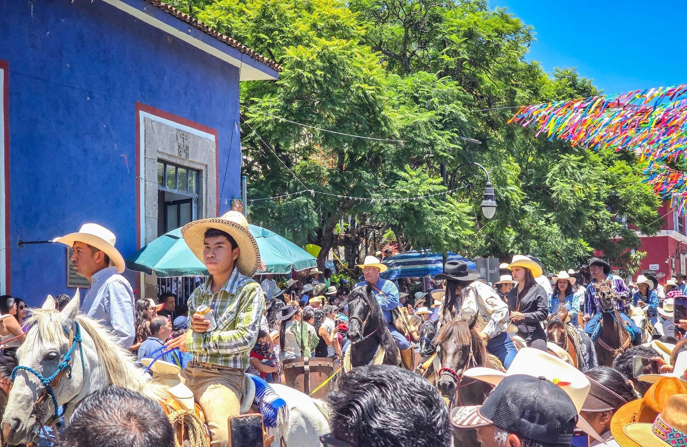

Hay una pregunta que me hacen más que ninguna otra los huéspedes que regresan a Malinalco después de su primera visita: "¿cuándo es la fiesta grande?". La respuesta siempre es la misma: los primeros días de agosto.
El 6 de agosto es el día del Divino Salvador — el santo patrono de Malinalco — y la celebración que lo rodea es, sin exageración, la experiencia más completa que este pueblo ofrece. En un solo día conviven el México prehispánico y el México colonial, la devoción religiosa y la fiesta popular, la solemnidad de la misa y el caos glorioso de los fuegos artificiales a medianoche.
Después de ocho años viviéndola desde adentro, esta es mi guía.
¿Qué es exactamente la fiesta del Divino Salvador?
Es la fiesta patronal más importante de Malinalco, reconocida oficialmente como Fiesta de Interés Turístico del Estado de México. Celebra al Divino Salvador del Mundo — una advocación de Jesucristo — cuya imagen es la patrona de la Parroquia del Divino Salvador, el corazón religioso del pueblo.
Pero llamarla simplemente "fiesta religiosa" sería quedarse corto. La celebración del 6 de agosto en Malinalco es la confluencia de todo lo que define al pueblo: los 8 barrios se unen, las tradiciones prehispánicas y coloniales se mezclan, y la comunidad completa — locales y visitantes — se funde en algo que solo existe aquí.
La historia detrás del 6 de agosto
La fecha no es aleatoria. El 6 de agosto es la Transfiguración del Señor en el calendario católico — el episodio bíblico donde Jesucristo se transforma ante sus apóstoles en el Monte Tabor, revelando su naturaleza divina entre una luz cegadora.
Para Malinalco, este simbolismo resonó profundamente desde los primeros años de la evangelización. El convento agustino, construido en 1540, lleva el nombre oficial de Convento de la Transfiguración del Señor. La parroquia que hoy ves en el centro del pueblo es heredera directa de esa primera misión evangelizadora. La fiesta del 6 de agosto lleva celebrándose en este lugar por más de 400 años.
Una de las tradiciones más llamativas — y menos documentadas — es la confección de la portada. El 5 de agosto, la comunidad transporta en procesión una estructura elaborada con flores, semillas, frutas y aserrín de colores hasta la entrada de la parroquia. Cada año es diferente, cada año es efímera. Dura solo los días de la fiesta y luego desaparece. Algunos dicen que las portadas de Malinalco son las más elaboradas del Estado de México.
El programa día a día
Las celebraciones no empiezan el 6 de agosto. Empiezan el 28 de julio — diez días antes — con el inicio del traslado de imágenes religiosas de los diferentes barrios hacia la parroquia central.
Los 6 elementos imperdibles de la fiesta

La cabalgata: +3,000 jinetes en el pueblo
Si hay una sola cosa de la fiesta que no puedes perderte, es la cabalgata del 5 de agosto. En 2025 participaron más de 3,000 cabalgantes provenientes de Malinalco y municipios vecinos. Es, sin exageración, uno de los espectáculos más impresionantes que puedes ver en el Estado de México.
El recorrido parte del centro, atraviesa las calles principales del pueblo y termina en el Lienzo Charro. Mientras pasan los jinetes, las calles empedradas resuenan como en otra época. Las bandas tocan en los balcones. La gente se aprieta en las banquetas. El olor a cuero, caballo y pólvora llena el aire.
El mejor punto de observación es el jardín principal o cualquier punto en las calles del centro histórico. Llega al menos 45 minutos antes del inicio para conseguir un buen lugar. Si te quedas en Cantera & Calma, el recorrido pasa a pocos metros de las propiedades en el Barrio de San Juan.
Consejos para vivirla bien
Un consejo que le doy a todos mis huéspedes: no intentes verlo todo. La fiesta dura todo el día y parte de la noche. Elige tus momentos, descansa entre ellos y vive cada uno con calma. Los que intentan correr de actividad en actividad se agotan y se pierden la mejor parte: el ambiente.
- La mañana es para la misa y las danzas prehispánicas — lo más solemne y lo más auténtico.
- La tarde es para los chinelos, la feria y la comida — lo más festivo y colorido.
- La noche es para el castillo — lo más espectacular.
- El 5 de agosto por la tarde es para la cabalgata — lo más único e irrepetible.
No es exageración: Cantera & Calma se llena semanas antes del 6 de agosto. Cada año recibimos solicitudes de personas que quieren venir y ya no tienen dónde quedarse. Si estás pensando en vivir esta fiesta, el momento de reservar es ahora — no cuando ya sea agosto.